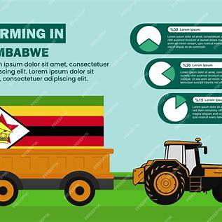
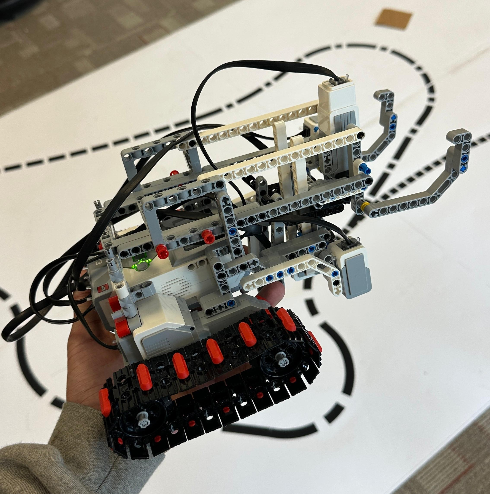

Recent Work

Farm Sustainability App (ENED 1100)
- Developed a farm analysis tool in Excel that predicted yield, cost, and revenue for Zimbabwean farmers.
- Integrated user inputs, dynamic graphs, and conditional logic to simulate real-life crop decisions.
- Designed the interface to be intuitive and helpful for resource-limited farming communities.

EV3 LEGO Robot (ENED 1120)
- Constructed a fully functional LEGO robot using the EV3 platform with active sensors and mobility.
- Programmed it in LabVIEW to detect obstacles, reverse, and complete an obstacle run.
- Collaborated with a team to optimize design within time and material constraints.
AI Research Paper
- Authored a paper on using neural networks and machine learning to bridge the rural education gap in India.
- Analyzed AI-powered learning platforms and proposed a framework for rural school deployment.
- Presented at a national student symposium on emerging tech in education.
Excel Macro Encryption Tool
- Created a VBA macro for encryption using substitution cipher logic.
- Enabled cross-workbook key fetching and real-time encryption of user data.
- Used to automate academic data handling securely within Excel.